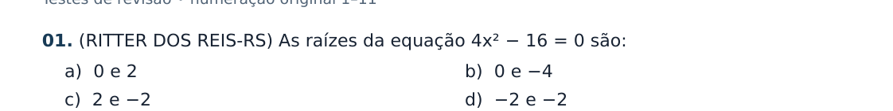
Selecione a letra correspondente às alternativas da imagem. Clique no enunciado para ampliar.
🔽 Ver gabarito comentado
Resposta: C
- 4x² = 16.
- x² = 4.
- x = ±2.
Os enunciados aparecem em recortes dos materiais fornecidos. Clique na imagem para ampliar. As respostas foram calculadas para este material; não são transcrições de gabaritos oficiais.
Fotografias · Equações do 2º grau: raízes · questão 01

Selecione a letra correspondente às alternativas da imagem. Clique no enunciado para ampliar.
Fotografias · Equações do 2º grau: raízes · questão 02
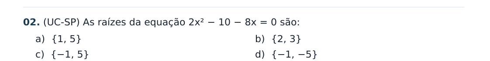
Selecione a letra correspondente às alternativas da imagem. Clique no enunciado para ampliar.
Fotografias · Equações do 2º grau: raízes · questão 03
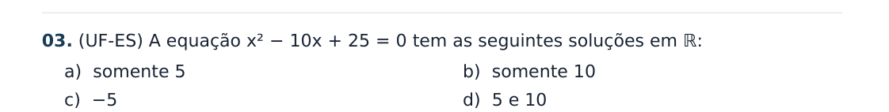
Selecione a letra correspondente às alternativas da imagem. Clique no enunciado para ampliar.
Fotografias · Equações do 2º grau: raízes · questão 04
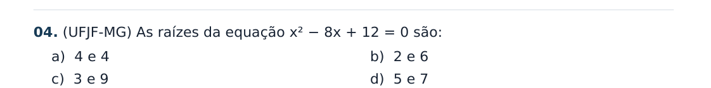
Selecione a letra correspondente às alternativas da imagem. Clique no enunciado para ampliar.
Fotografias · Equações do 2º grau: raízes · questão 05
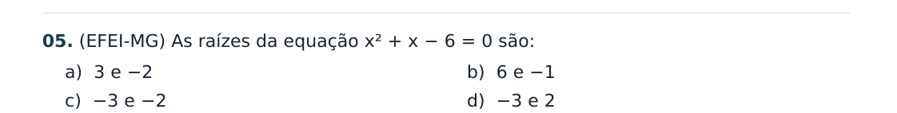
Selecione a letra correspondente às alternativas da imagem. Clique no enunciado para ampliar.
Fotografias · Equações do 2º grau: raízes · questão 06
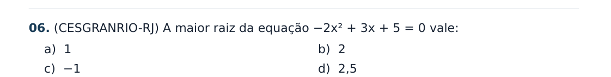
Selecione a letra correspondente às alternativas da imagem. Clique no enunciado para ampliar.
Fotografias · Equações do 2º grau: raízes · questão 07
Confira também o desenvolvimento no gabarito; respostas em formatos equivalentes podem exigir conferência manual.
Fotografias · Equações do 2º grau: raízes · questão 08
Confira também o desenvolvimento no gabarito; respostas em formatos equivalentes podem exigir conferência manual.
Fotografias · Equações do 2º grau: raízes · questão 09
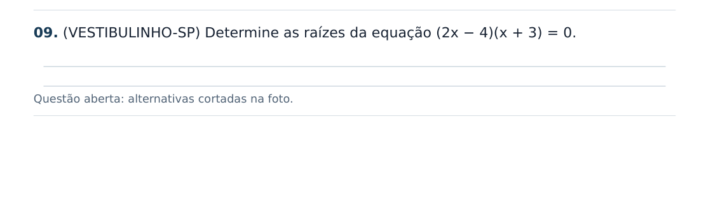
Confira também o desenvolvimento no gabarito; respostas em formatos equivalentes podem exigir conferência manual.
Fotografias · Equações do 2º grau: raízes · questão 10
Confira também o desenvolvimento no gabarito; respostas em formatos equivalentes podem exigir conferência manual.
Fotografias · Equações do 2º grau: raízes · questão 11
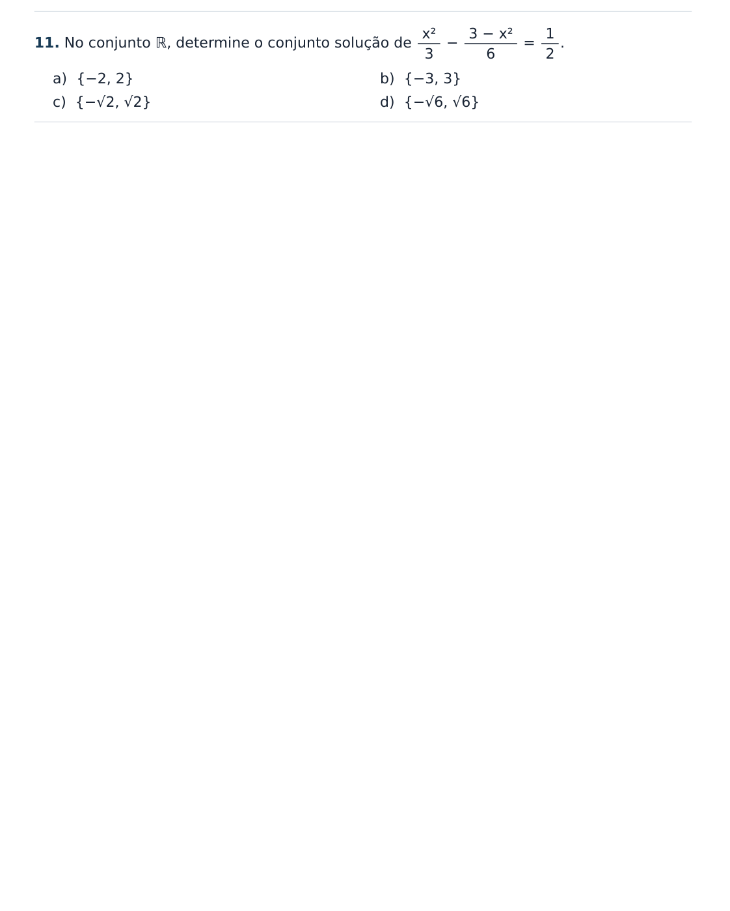
Selecione a letra correspondente às alternativas da imagem. Clique no enunciado para ampliar.
Fotografias · Equações do 2º grau: discriminante, soma e produto · questão 01
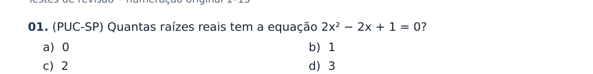
Selecione a letra correspondente às alternativas da imagem. Clique no enunciado para ampliar.
Fotografias · Equações do 2º grau: discriminante, soma e produto · questão 02
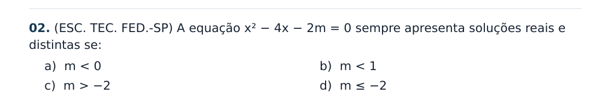
Selecione a letra correspondente às alternativas da imagem. Clique no enunciado para ampliar.
Fotografias · Equações do 2º grau: discriminante, soma e produto · questão 03
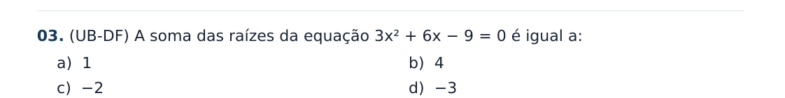
Selecione a letra correspondente às alternativas da imagem. Clique no enunciado para ampliar.
Fotografias · Equações do 2º grau: discriminante, soma e produto · questão 04
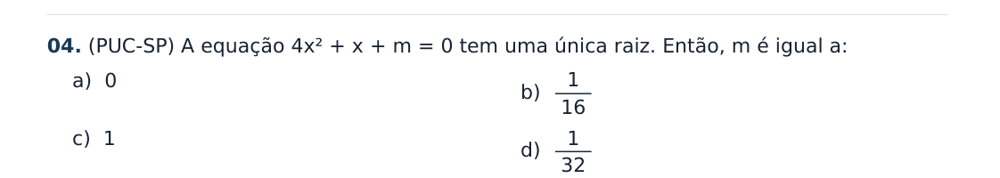
Selecione a letra correspondente às alternativas da imagem. Clique no enunciado para ampliar.
Fotografias · Equações do 2º grau: discriminante, soma e produto · questão 05
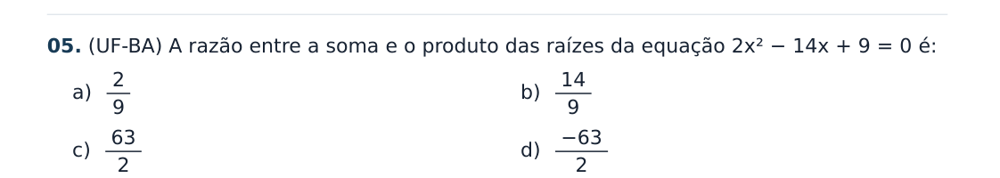
Selecione a letra correspondente às alternativas da imagem. Clique no enunciado para ampliar.
Fotografias · Equações do 2º grau: discriminante, soma e produto · questão 06
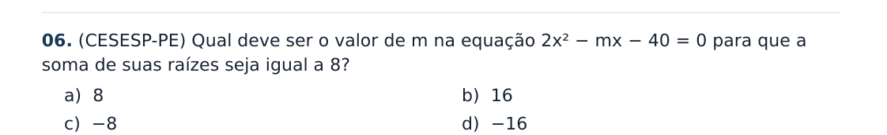
Selecione a letra correspondente às alternativas da imagem. Clique no enunciado para ampliar.
Fotografias · Equações do 2º grau: discriminante, soma e produto · questão 07
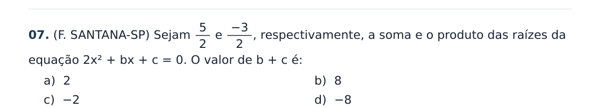
Selecione a letra correspondente às alternativas da imagem. Clique no enunciado para ampliar.
Fotografias · Equações do 2º grau: discriminante, soma e produto · questão 08
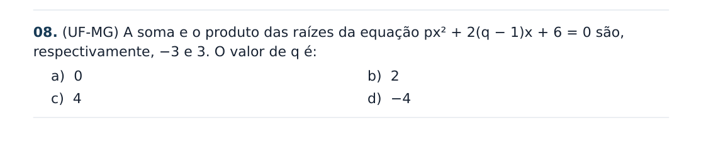
Selecione a letra correspondente às alternativas da imagem. Clique no enunciado para ampliar.
Fotografias · Equações do 2º grau: discriminante, soma e produto · questão 09
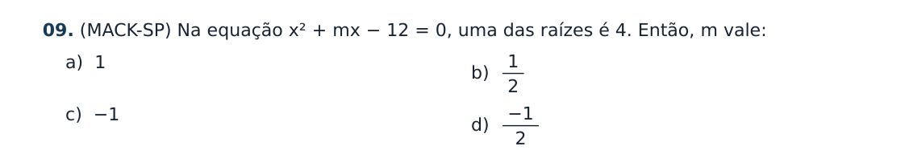
Selecione a letra correspondente às alternativas da imagem. Clique no enunciado para ampliar.
Fotografias · Equações do 2º grau: discriminante, soma e produto · questão 10
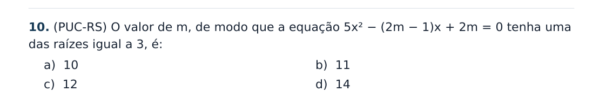
Selecione a letra correspondente às alternativas da imagem. Clique no enunciado para ampliar.
Fotografias · Equações do 2º grau: discriminante, soma e produto · questão 11
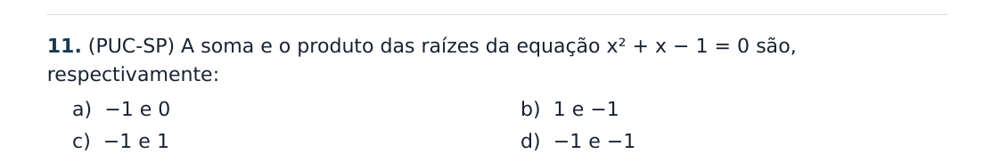
Selecione a letra correspondente às alternativas da imagem. Clique no enunciado para ampliar.
Fotografias · Equações do 2º grau: discriminante, soma e produto · questão 12
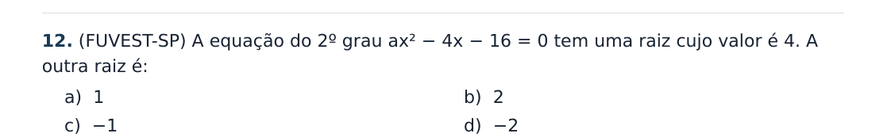
Selecione a letra correspondente às alternativas da imagem. Clique no enunciado para ampliar.
Fotografias · Equações do 2º grau: discriminante, soma e produto · questão 13
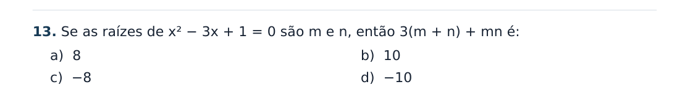
Selecione a letra correspondente às alternativas da imagem. Clique no enunciado para ampliar.
Fotografias · Equações do 2º grau: discriminante, soma e produto · questão 14
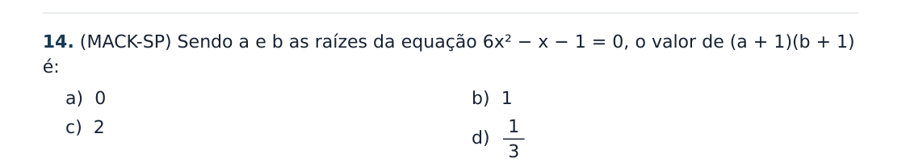
Selecione a letra correspondente às alternativas da imagem. Clique no enunciado para ampliar.
Fotografias · Equações do 2º grau: discriminante, soma e produto · questão 15
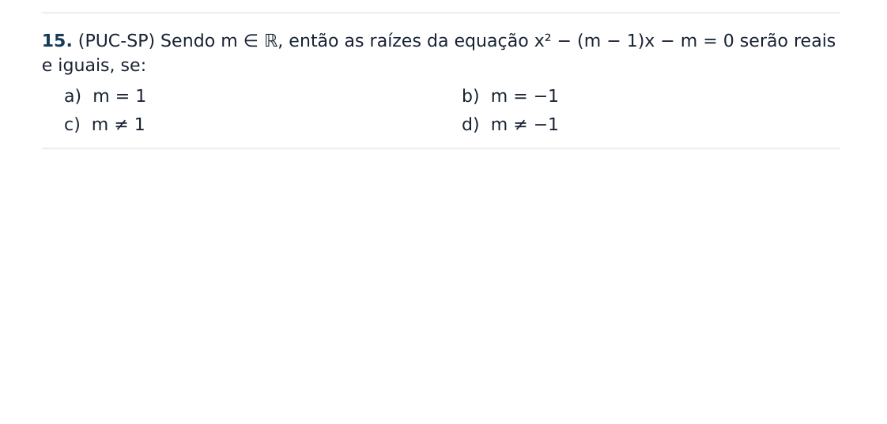
Selecione a letra correspondente às alternativas da imagem. Clique no enunciado para ampliar.
Fotografias · Soma e produto: exercícios abertos · questão 06
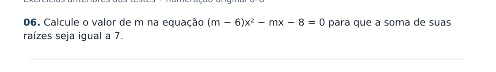
Confira também o desenvolvimento no gabarito; respostas em formatos equivalentes podem exigir conferência manual.
Fotografias · Soma e produto: exercícios abertos · questão 07
Confira também o desenvolvimento no gabarito; respostas em formatos equivalentes podem exigir conferência manual.
Fotografias · Soma e produto: exercícios abertos · questão 08
Confira também o desenvolvimento no gabarito; respostas em formatos equivalentes podem exigir conferência manual.
📚 Aulas particulares com Ágatha · Matemática / ETEC